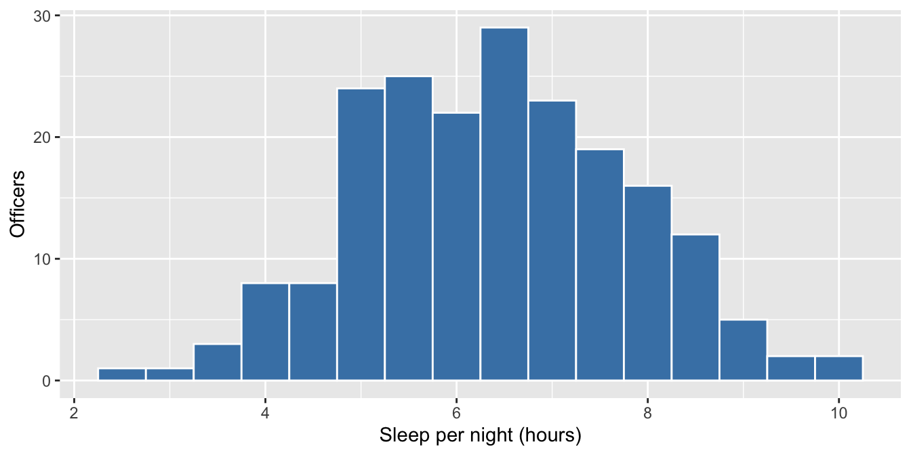
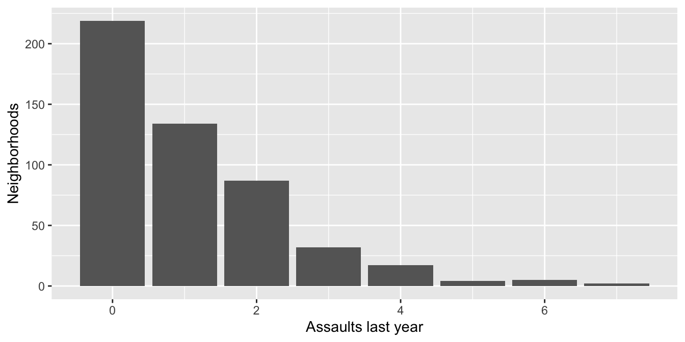

Practice Problems · Session 2
Central tendency, dispersion, and the shapes of distributions
Ungraded self-checks. Work each problem in your own R session before clicking the solution. These use different numbers and variables than the homework on purpose — if you can do these cold, Homework 2 (and the midterm’s descriptives section) will feel routine.
All problems that use data need only:
Problem 1 · Three kinds of typical
Response times (in minutes) for 10 priority calls one Friday night — nine routine, plus one call that sat in the queue through a shift change:
response <- c(4, 5, 5, 6, 6, 6, 7, 8, 9, 42)Compute the mean, median, and mode. Which of the three would you not want on the department’s public dashboard, and why?
Problem 2 · Same mean, different story
Two detective units both average 30 open cases per detective — but look at the individual caseloads:
Compute for each unit: the range (with range() and diff()), the deviations from the mean, the sum of squared deviations, and the population variance and SD by hand. Then run var() and sd() — why don’t the built-ins match your hand calculations?
Solution
[1] 24[1] 2unit_a - mean(unit_a)[1] -12 0 12unit_b - mean(unit_b)[1] -1 0 1[1] 288[1] 2[1] 96[1] 9.797959[1] 0.6666667[1] 0.8164966[1] 144[1] 12[1] 1[1] 1Identical centers, radically different dispersion: unit A’s SD (~9.8 population / 12 sample) says workloads genuinely vary; unit B’s (~1) says everyone carries the same load. The built-ins disagree with your hand math because R divides by n − 1, not n — Session 4 pays off that IOU.
Problem 3 · Audit the briefing note
A draft briefing memo about Problem 1’s data contains two sentences:
“The typical priority call waited about 10 minutes for an officer.”
“Half of priority calls had an officer on scene within 6 minutes.”
One is defensible, one is misleading. Which is which — and rewrite the misleading one in a single honest sentence.
Solution
mean median
9.8 6.0 Sentence (b) is defensible — it is exactly what the median (6) means. Sentence (a) launders the mean (9.8) into the word “typical,” but nine of ten calls beat 10 minutes; only the queued outlier pushes the average there. An honest rewrite: “Half of priority calls had an officer within 6 minutes; one call held during a shift change took 42.” With skewed data, “typical” belongs to the median — and outliers deserve their own sentence, not a hiding place inside the mean.
Problem 4 · Real data: how much do officers sleep?
Using officers, summarize sleep_hours — mean, median, SD, min, max — and make a histogram (binwidth = 0.5). Is the distribution roughly symmetric or skewed? How do you know from the numbers alone?
Solution
# A tibble: 1 × 5
mean_sleep median_sleep sd_sleep min max
<dbl> <dbl> <dbl> <dbl> <dbl>
1 6.40 6.4 1.40 2.5 10ggplot(officers, aes(sleep_hours)) +
geom_histogram(binwidth = 0.5, fill = "steelblue", color = "white") +
labs(x = "Sleep per night (hours)", y = "Officers")
Mean (6.40) and median (6.4) are essentially identical — the numeric signature of a roughly symmetric distribution, which the histogram confirms. (Compare Problem 1, where mean and median disagreed badly: that gap is the skew detector.)
Problem 5 · The empirical rule, checked against reality
If sleep_hours were perfectly normal, about 68% of officers would fall within ±1 SD of the mean and about 95% within ±2 SD. Compute the actual shares. (Hint: mean(abs(x - m) <= s) — the same mean-of-a-logical move as always.)
Solution
[1] 0.695[1] 0.955About 69.5% and 95.5% — within a couple points of the empirical rule’s 68/95 benchmarks. That is what “the SD tells you how typical or extreme a value is” means in practice: for bell-shaped data, mean ± 2 SD brackets nearly everyone.
Problem 6 · A Poisson in the wild
Using nbhd (500 neighborhoods), make a bar chart of assaults (last year’s count per neighborhood), then compute its mean and variance. Now simulate 500 draws from a Poisson with the same λ — rpois(500, lambda = mean(nbhd$assaults)) — and compare the two count tables. Does the textbook distribution fit the real one?
Solution

# A tibble: 1 × 2
mean_assaults var_assaults
<dbl> <dbl>
1 1.07 1.69
0 1 2 3 4 5 6 7
219 134 87 32 17 4 5 2
0 1 2 3 4 5
148 192 102 45 11 2 The broad shape matches — right-skewed counts of a rare event, exactly the Poisson’s territory. But look closer: the real data have more zeros (219 vs ~148) and a longer tail (counts up to 7 vs 5), and the variance (1.69) exceeds the mean (1.07), where a true Poisson would have them equal. Real CJ counts are usually messier than the textbook distribution — a mismatch called overdispersion that you’ll meet again later in the course.